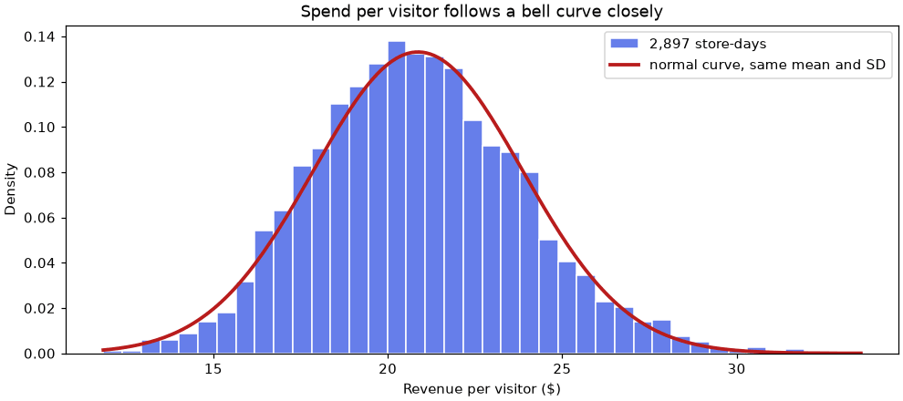
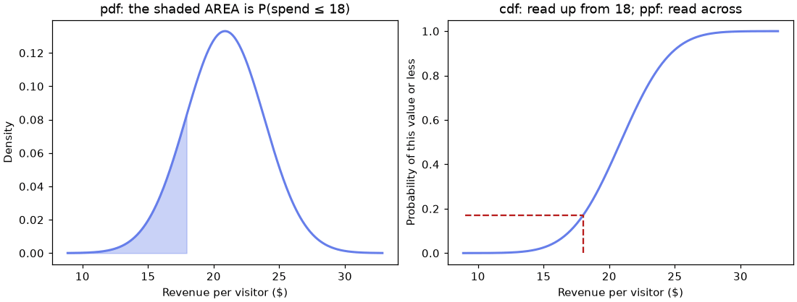
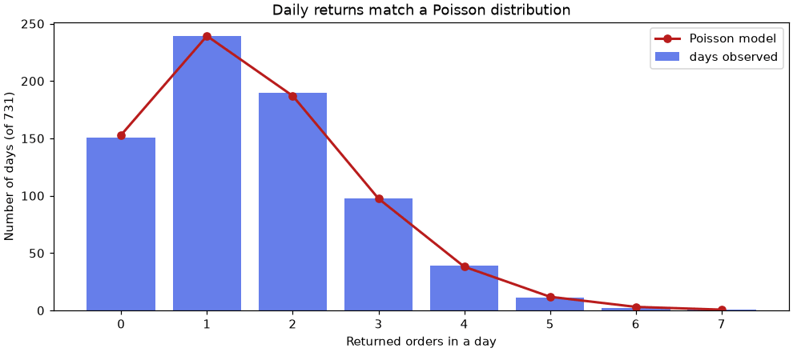
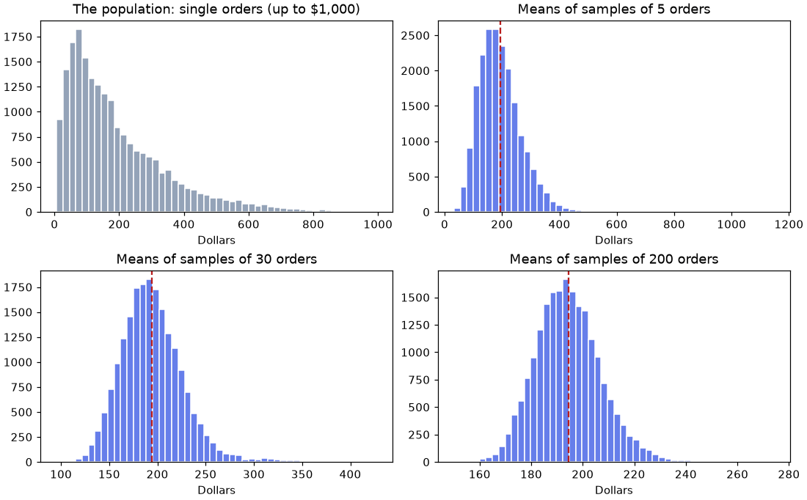
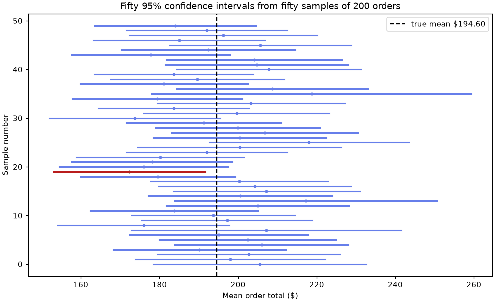

🎲 Lesson 4.3: Probability Distributions
Move from describing the data you have to reasoning about data you have not seen yet: model uncertainty with four workhorse distributions, simulate when the math gets hard, and put an honest margin of error on an average.
🎯 Learning Objectives
By the end of this lesson, you will be able to:
- Explain what a random variable and a probability distribution are, and tell discrete from continuous
- Choose between the uniform, normal, binomial and Poisson distributions for a situation, and check the choice against data
- Answer probability questions with
scipy.statsusingpmf/pdf,cdf,sfandppf - Simulate random outcomes reproducibly with
np.random.default_rngand use simulation to check a calculation - Demonstrate the central limit theorem by simulation, compute a standard error, and build and correctly interpret a 95% confidence interval for a mean
In This Lesson
🎰 Random Variables and Distributions
The last two lessons described data that already exists. A business also has to plan for data that does not exist yet: tomorrow's visitors, next week's returns, the true average order when you can only afford to look at a sample. You cannot know those numbers. You can know how they behave, and that is what a probability distribution describes.
💡 Mental Model: The Vending Machine
Picture a vending machine that drops a random snack each time you press the button. You cannot say what the next press will give you. But if someone tells you the machine is stocked with 50% chips, 30% candy and 20% cookies, you know a great deal: what to expect most often, how surprised to be by three cookies in a row, and roughly what 100 presses will produce. That stocking list is a probability distribution: every possible outcome, with its probability.
A random variable is a number whose value is decided by chance: the number of orders returned tomorrow, the spend of the next visitor. It comes in two kinds.
| Discrete | Continuous | |
|---|---|---|
| Values | Separate, countable: 0, 1, 2, … | Any value in a range: 20.87, 20.871, … |
| You get it by | Counting | Measuring |
| Examples | Returns in a day, sales out of 40 visitors | Spend per visitor, temperature, time |
| Probability of one exact value | A real number, such as 0.21 | Zero; only ranges have probability |
| In this lesson | Binomial, Poisson | Uniform, normal |
🤔 Why This Matters
A histogram of past data is a picture of what happened. A distribution is a compact model of what tends to happen, described by one or two numbers, that lets you compute the chance of things you have never observed. Every tool in the rest of this module (hypothesis tests, A/B tests, confidence intervals) is built by asking "what would chance alone produce?", and distributions are how that question gets an answer.
Set up the notebook. scipy.stats holds the distributions, and one seeded random generator will serve the whole lesson.
import numpy as np
import pandas as pd
import matplotlib.pyplot as plt
from scipy import stats
rng = np.random.default_rng(42)
orders = pd.read_csv("data/orders.csv", parse_dates=["order_date"])
daily = pd.read_csv("data/daily_sales.csv", parse_dates=["date"])
print(orders.shape, daily.shape)Output
(20302, 11) (2903, 8)⚠️ Run the Blocks in Order
A generator hands out its random numbers in sequence. If you run this lesson's blocks top to bottom, once each, you will get exactly the numbers shown. Run one twice, or skip one, and every random result after that will differ slightly from this page. That is expected, and the conclusions will not change.
🎯 The Uniform Distribution and Simulation
The simplest distribution is the uniform: every outcome equally likely. A fair die is the discrete version, with six outcomes at probability 1/6 each. You already know how to roll one with NumPy, and Lesson 1.4 introduced most of the simulation tools this lesson leans on: a seeded generator, draws from named distributions, and the idea of sampling variation.
rolls = rng.integers(1, 7, size=10) # 1 to 6: the upper bound is excluded
print(rolls)Output
[1 5 4 3 3 6 1 5 2 1]Ten rolls tell you little. A hundred thousand tell you the stocking list.
many = rng.integers(1, 7, size=100_000)
print(pd.Series(many).value_counts(normalize=True).sort_index().round(3).tolist())
print("mean of the rolls:", round(many.mean(), 3))Output
[0.167, 0.167, 0.165, 0.167, 0.168, 0.166]
mean of the rolls: 3.5Each face comes up very close to 1/6 = 0.167 of the time, and the average roll is very close to 3.5. That value, the long-run average of a random variable, is called its expected value. No single roll is ever 3.5; it is what the rolls average out to. The tendency of an average to settle on the expected value as you collect more outcomes is the law of large numbers, and it is why simulation works: if you can simulate a process, you can estimate any probability about it by counting.
The continuous uniform spreads probability evenly over a range. Suppose a customer is equally likely to walk in at any moment of an hour. What is the chance they arrive in the first 15 minutes?
arrivals = rng.uniform(0, 60, size=100_000) # minutes past the hour
print("simulated:", round((arrivals < 15).mean(), 3))
arrival = stats.uniform(loc=0, scale=60) # the same distribution, as a scipy object
print("exact :", arrival.cdf(15))Output
simulated: 0.25
exact : 0.25Two routes to one answer. The simulation counted; the scipy.stats object calculated. stats.uniform(loc=0, scale=60) is called a frozen distribution: a distribution with its parameters fixed, ready to answer questions. You will build one for every distribution in this lesson. (For the uniform, loc is the start and scale is the width, not the end. That catches people, and it is in Common Mistakes.)
🔔 The Normal Distribution
In Lesson 4.2 you computed revenue per visitor for every store-day and saw one even mound. Draw it again, this time with the histogram scaled so that its total area is 1 (density=True), and lay a smooth curve over it.
spend = (daily["revenue"] / daily["visitors"]).dropna()
mu, sigma = spend.mean(), spend.std()
print("mean:", round(mu, 2), " SD:", round(sigma, 2), " n:", len(spend))
spend_model = stats.norm(loc=mu, scale=sigma) # a normal with the same mean and SD
x = np.linspace(spend.min(), spend.max(), 200)
fig, ax = plt.subplots(figsize=(9, 4), layout="constrained")
ax.hist(spend, bins=40, density=True, color="#667eea", edgecolor="white", label="2,897 store-days")
ax.plot(x, spend_model.pdf(x), color="#b91c1c", linewidth=2.5, label="normal curve, same mean and SD")
ax.set_xlabel("Revenue per visitor ($)")
ax.set_ylabel("Density")
ax.set_title("Spend per visitor follows a bell curve closely")
ax.legend()
plt.show()Output
mean: 20.87 SD: 3.0 n: 2897
The curve is the normal distribution, the bell curve. It is completely described by two numbers: its mean (where the peak is) and its standard deviation (how wide the bell is). In scipy those are loc and scale.
Why does this shape turn up so often? A value that is the sum of many small independent influences tends to be normally distributed. Spend per visitor on a given day is an average over hundreds of visitors, each doing their own thing. Heights, measurement errors and averages of all kinds behave the same way. Values driven by a few big multiplicative effects, like order totals, do not. You will see the reason for the "sum of many things" rule later in this lesson.
The 68-95-99.7 Rule
Every normal distribution puts the same share of its probability within a given number of SDs of the mean. Compare the theory with the data.
for k in (1, 2, 3):
in_data = ((spend - mu).abs() < k * sigma).mean()
in_theory = stats.norm.cdf(k) - stats.norm.cdf(-k)
print(f"within {k} SD: data {in_data:.1%} normal curve {in_theory:.1%}")Output
within 1 SD: data 68.6% normal curve 68.3%
within 2 SD: data 95.1% normal curve 95.4%
within 3 SD: data 99.6% normal curve 99.7%About 68% within one SD, 95% within two, 99.7% within three. This is the guideline about z-scores you were promised in Lesson 4.2, and now you know its fine print: it is a property of the normal shape. The spend data follows it to within a fraction of a percentage point. Order totals would not.
💡 The Standard Normal
stats.norm with no arguments is the standard normal: mean 0, SD 1. It is the distribution of z-scores of normal data. That is why the loop above could ask stats.norm.cdf(k) directly: "within k SDs" is a question about z.
🧰 Four Questions, Four Methods
Every distribution in scipy.stats answers the same small set of questions through the same method names. Learn them once on the spend model and they work everywhere.
| Method | Question it answers | Takes | Returns |
|---|---|---|---|
pmf(k) (discrete) | How likely is exactly k? | a value | a probability |
pdf(x) (continuous) | How tall is the curve at x? | a value | a density (not a probability) |
cdf(x) | How likely is x or less? | a value | a probability |
sf(x) | How likely is more than x? | a value | a probability, 1 - cdf(x) |
ppf(q) | Which value has probability q below it? | a probability | a value (the reverse of cdf) |
rvs(size, random_state) | Give me random draws | a count | simulated values |
x = np.linspace(mu - 4 * sigma, mu + 4 * sigma, 300)
fig, (ax1, ax2) = plt.subplots(1, 2, figsize=(10, 3.8), layout="constrained")
ax1.plot(x, spend_model.pdf(x), color="#667eea", linewidth=2)
ax1.fill_between(x, spend_model.pdf(x), where=x <= 18, color="#667eea", alpha=0.35)
ax1.set_title("pdf: the shaded AREA is P(spend ≤ 18)")
ax1.set_xlabel("Revenue per visitor ($)")
ax1.set_ylabel("Density")
ax2.plot(x, spend_model.cdf(x), color="#667eea", linewidth=2)
ax2.plot([18, 18, x[0]], [0, spend_model.cdf(18), spend_model.cdf(18)], color="#b91c1c", linestyle="--")
ax2.set_title("cdf: read up from 18; ppf: read across")
ax2.set_xlabel("Revenue per visitor ($)")
ax2.set_ylabel("Probability of this value or less")
plt.show()
print("cdf(18) :", round(spend_model.cdf(18), 4))
print("ppf(that):", round(spend_model.ppf(spend_model.cdf(18)), 4))Output
cdf(18) : 0.1695
ppf(that): 18.0
cdf; going from a probability across to a value is ppf.Now use them on real questions, and check each against the data.
print("P(spend below $15): model", round(spend_model.cdf(15), 3), " data", round((spend < 15).mean(), 3))
print("P(spend above $25): model", round(spend_model.sf(25), 3), " data", round((spend > 25).mean(), 3))
print("P($18 to $24): model", round(spend_model.cdf(24) - spend_model.cdf(18), 3),
" data", round(((spend >= 18) & (spend <= 24)).mean(), 3))
print("95th percentile: model", round(spend_model.ppf(0.95), 2), " data", round(spend.quantile(0.95), 2))Output
P(spend below $15): model 0.025 data 0.019
P(spend above $25): model 0.084 data 0.087
P($18 to $24): model 0.683 data 0.686
95th percentile: model 25.8 data 26.01The model reproduces the middle of the data closely (68.3% against 68.6% for the $18 to $24 band) and is a little off in the tails, where the data has slightly fewer very low days and slightly more very high ones than a perfect bell. That is typical. A model summarizes 2,897 numbers with two; it buys you that convenience, and the ability to ask about values you have not seen, at the cost of small errors you can measure.
⚠️ A Density Is Not a Probability
For a continuous variable, pdf(x) is the height of the curve, and only areas under it are probabilities. The chance of a spend of exactly $20.000000 is zero. Heights can even be greater than 1 when the curve is narrow. Ask pdf for drawing curves and cdf for probabilities.
🪙 The Binomial Distribution
Now a counting question. Some orders are returned. Out of the next 40 orders, how many will come back?
The binomial distribution models the number of "successes" in a fixed number of independent tries, each with the same probability of success. It has two parameters: n, the number of tries, and p, the probability on each try. ("Success" just means the outcome being counted. Here it is a return.)
is_returned = orders["status"] == "returned"
p_return = is_returned.mean()
print("return rate:", round(p_return, 4))
returns_in_40 = stats.binom(n=40, p=p_return)
print("expected returns in 40 orders:", round(returns_in_40.mean(), 2))
print("standard deviation :", round(returns_in_40.std(), 2))Output
return rate: 0.0563
expected returns in 40 orders: 2.25
standard deviation : 1.46The expected value of a binomial is n × p: 40 orders at 5.63% is 2.25 returns on average. Its SD is √(n × p × (1 - p)). But averages are not what a warehouse plans around. It wants the chances of specific counts.
for k in range(6):
print(f"P(exactly {k} returns) = {returns_in_40.pmf(k):.3f}")
print(f"P(5 or more) = {returns_in_40.sf(4):.3f}")Output
P(exactly 0 returns) = 0.098
P(exactly 1 returns) = 0.235
P(exactly 2 returns) = 0.273
P(exactly 3 returns) = 0.207
P(exactly 4 returns) = 0.114
P(exactly 5 returns) = 0.049
P(5 or more) = 0.072Two returns is the single most likely outcome, a batch with none happens about one time in ten, and five or more about 7% of the time. Note the sf(4): "more than 4" is "5 or more" for a count. Off-by-one slips at this step are the most common binomial error.
Check It Two Ways
First by simulation: rng.binomial produces counts directly.
sim = rng.binomial(n=40, p=p_return, size=100_000)
print("simulated P(0 returns) :", round((sim == 0).mean(), 3))
print("simulated P(5 or more) :", round((sim >= 5).mean(), 3))Output
simulated P(0 returns) : 0.098
simulated P(5 or more) : 0.073Then against reality. Shuffle the real orders, cut them into batches of 40, count the returns in each batch, and compare the shares with the formula.
shuffled = is_returned.sample(frac=1, random_state=42).to_numpy()
n_batches = len(shuffled) // 40
batches = shuffled[:n_batches * 40].reshape(n_batches, 40).sum(axis=1)
observed = pd.Series(batches).value_counts(normalize=True).sort_index()
compare = pd.DataFrame({"real batches": observed.round(3),
"binomial": [round(returns_in_40.pmf(k), 3) for k in observed.index]})
print(n_batches, "batches of 40")
print(compare.head(7))Output
507 batches of 40
real batches binomial
0 0.107 0.098
1 0.239 0.235
2 0.247 0.273
3 0.217 0.207
4 0.118 0.114
5 0.051 0.049
6 0.016 0.017The formula, the simulation and 507 batches of real orders agree to within about three percentage points.
⚠️ The Assumptions Are Part of the Model
Binomial needs a fixed n, independent tries, and the same p on every try. The shuffle above made the batches fit the assumptions. A real batch might not: Pinecrest's online orders are returned about twice as often as store orders.
print(orders.groupby("channel")["status"].agg(lambda s: (s == "returned").mean()).round(4))Output
channel
online 0.0692
store 0.0340
Name: status, dtype: float64A batch of 40 online orders is binomial with p = 0.069, not 0.056. If you use the blended rate for an all-online batch you will underestimate returns. Always ask whether "the same p" really holds for the tries you are modeling.
📬 The Poisson Distribution
A different counting question: how many returned orders does a day produce? There is no fixed number of tries here, just events scattered through time. The Poisson distribution models the count of events in a fixed interval (a day, an hour, a square mile) when events happen independently at a steady average rate. It has a single parameter, the average count per interval, usually written λ (lambda) and called mu in scipy.
Count each day's orders that ended up returned. (The file records the order date, not the date the parcel came back, so "a day's returns" here means returns among the orders placed that day.) Days with no returned orders must count as zeros, so reindex over every date. (reindex, which you used in Lesson 2.6 to put labels in order, lines a result up against any list of labels you supply; labels that were absent get a new row, filled here with fill_value=0.)
all_days = pd.date_range("2024-01-01", "2025-12-31")
returns_per_day = (orders[is_returned].groupby("order_date").size()
.reindex(all_days, fill_value=0))
lam = returns_per_day.mean()
print("days:", len(returns_per_day))
print("mean returns per day:", round(lam, 3))
print("variance :", round(returns_per_day.var(), 3))Output
days: 731
mean returns per day: 1.564
variance : 1.526The mean and the variance are almost equal. That is the fingerprint of a Poisson distribution, whose mean and variance are both λ, and it is the first thing to check before using one. Now compare the whole distribution: how many days had 0, 1, 2, … returns, against what Poisson predicts for 731 days.
returns_model = stats.poisson(mu=lam)
observed_days = returns_per_day.value_counts().sort_index()
expected_days = pd.Series(returns_model.pmf(observed_days.index) * len(returns_per_day),
index=observed_days.index)
print(pd.DataFrame({"days observed": observed_days, "Poisson expects": expected_days.round(1)}))
fig, ax = plt.subplots(figsize=(9, 4), layout="constrained")
ax.bar(observed_days.index, observed_days, color="#667eea", label="days observed")
ax.plot(expected_days.index, expected_days, "o-", color="#b91c1c", linewidth=2, label="Poisson model")
ax.set_xlabel("Returned orders in a day")
ax.set_ylabel("Number of days (of 731)")
ax.set_title("Daily returns match a Poisson distribution")
ax.legend()
plt.show()Output
days observed Poisson expects
0 151 153.1
1 239 239.3
2 190 187.1
3 98 97.5
4 39 38.1
5 11 11.9
6 2 3.1
7 1 0.7
The fit is striking: 151 zero-return days observed against 153 expected, 239 against 239 for one return. With the model in hand you can answer planning questions.
print("P(no returns in a day) :", round(returns_model.pmf(0), 3))
print("P(5 or more in a day) :", round(returns_model.sf(4), 3))
print("count covering 95% of days:", returns_model.ppf(0.95))
print("count covering 99% of days:", returns_model.ppf(0.99))Output
P(no returns in a day) : 0.209
P(5 or more in a day) : 0.022
count covering 95% of days: 4.0
count covering 99% of days: 5.0When Poisson Does Not Fit
Do not assume every count is Poisson. Try the total number of orders per day.
orders_per_day = orders.groupby("order_date").size()
print("mean :", round(orders_per_day.mean(), 1))
print("variance:", round(orders_per_day.var(), 1))Output
mean : 27.8
variance: 64.4The variance is more than twice the mean. The rate is not steady: weekends, seasons and sale days push it up and down, so the day-to-day spread is wider than a single-rate Poisson allows. This is called overdispersion, and it is very common in business data. A Poisson model here would be far too confident. The mean-equals-variance check takes one line. Run it every time.
| If you are modeling… | Consider | Parameters | Check |
|---|---|---|---|
| A value equally likely anywhere in a range | Uniform | start, width | Flat histogram |
| A measurement that is a sum or average of many small effects | Normal | mean, SD | Symmetric bell; 68-95-99.7 holds |
| Successes out of a fixed number of tries | Binomial | n, p | Independent tries, same p for each |
| Events in a fixed interval of time or space | Poisson | average rate | Mean ≈ variance |
🏔️ The Central Limit Theorem
Here is a puzzle. Order totals are about as far from a bell curve as data gets: skewness 5.5, a long tail, bulk orders at twenty times the median. Most classical statistics is built on the normal distribution. How can it possibly be used on data like this?
The answer is one of the most useful facts in statistics, and you can watch it happen. Treat the 20,302 order totals as the full population. Draw a random sample of n orders and take its mean. Do that 20,000 times, and look at the distribution of those means.
population = orders["order_total"].to_numpy()
print("population mean:", round(population.mean(), 2), " SD:", round(population.std(), 2),
" skew:", round(stats.skew(population), 2))
fig, axes = plt.subplots(2, 2, figsize=(10, 6.2), layout="constrained")
axes[0, 0].hist(population[population <= 1000], bins=50, color="#94a3b8", edgecolor="white")
axes[0, 0].set_title("The population: single orders (up to $1,000)")
sample_means = {}
for ax, n in zip(axes.flat[1:], [5, 30, 200]):
samples = rng.choice(population, size=(20_000, n)) # 20,000 samples of n orders
sample_means[n] = samples.mean(axis=1) # one mean per sample
ax.hist(sample_means[n], bins=50, color="#667eea", edgecolor="white")
ax.axvline(population.mean(), color="#b91c1c", linestyle="--")
ax.set_title(f"Means of samples of {n} orders")
for ax in axes.flat:
ax.set_xlabel("Dollars")
plt.show()Output
population mean: 194.6 SD: 178.76 skew: 5.48
The population never changes. What becomes normal is the sample mean. Put numbers on what the pictures show:
print(f"{'n':>5} {'mean of means':>14} {'SD of means':>12} {'sigma/sqrt(n)':>14} {'skew':>6}")
for n, means in sample_means.items():
print(f"{n:>5} {means.mean():>14.2f} {means.std():>12.2f} "
f"{population.std() / np.sqrt(n):>14.2f} {stats.skew(means):>6.2f}")Output
n mean of means SD of means sigma/sqrt(n) skew
5 194.59 79.08 79.94 2.21
30 194.69 32.54 32.64 0.95
200 194.43 12.53 12.64 0.40Three things are happening, and together they are the central limit theorem (CLT):
- The means center on the true mean. At every sample size the average of the sample means is within a dollar or so of $194.60.
- Their spread shrinks like σ/√n. The SD of the sample means matches the population SD divided by the square root of the sample size, almost exactly. To halve the spread you need four times the data.
- Their shape approaches the normal. Skewness falls from 5.5 for single orders toward 0 as n grows.
⚠️ What the CLT Does Not Say
It does not make your data normal. Collect a million orders and their histogram is exactly as skewed as before. Only the distribution of an average (or a sum) becomes normal. It needs independent draws from a population with a finite SD. "Large enough n" depends on the skew. The common "n of 30 is enough" rule of thumb is fine for mildly skewed data. Here the means of 30 orders still have a skewness near 1, and even at 200 a little is left (0.40).
This also answers the question from earlier: why are sums of many small effects normal? Because a sum is just a mean multiplied by n. The CLT is the reason the bell curve is everywhere.
🎯 Standard Error and a First Confidence Interval
In the simulation you could draw 20,000 samples because you owned the whole population. In real work you get one sample and never see the population. Suppose Pinecrest's auditor pulls 200 orders at random and wants to estimate the mean order total for the whole business.
sample = rng.choice(population, size=200, replace=False) # the auditor's 200 orders
x_bar = sample.mean()
s = sample.std(ddof=1)
print("sample mean:", round(x_bar, 2))
print("sample SD :", round(s, 2))Output
sample mean: 195.93
sample SD : 157.94The sample mean is the best single guess, a point estimate. It is not exactly $194.60, and a different 200 orders would give a different number. How far off might it be? The CLT has already told you: sample means vary around the true mean with a spread of σ/√n. You do not know σ, but the sample SD estimates it. That gives the standard error of the mean:
SE = s / √n
se = s / np.sqrt(len(sample))
print("standard error:", round(se, 2))
print("scipy.stats.sem:", round(stats.sem(sample), 2))Output
standard error: 11.17
scipy.stats.sem: 11.17💡 Standard Deviation or Standard Error?
They answer different questions. The SD (about $158 in this sample) says how much individual orders vary. It does not shrink as you collect more data. The SE (about $11) says how much the sample mean would vary from sample to sample. It shrinks with √n. Report the SD to describe the data and the SE to describe the precision of your estimate.
From Standard Error to an Interval
Sample means are approximately normal, and 95% of a normal distribution lies within 1.96 SDs of its center (stats.norm.ppf(0.975) is 1.96). So about 95% of the time, the sample mean lands within 1.96 standard errors of the true mean. Turn that around and you have a 95% confidence interval: the sample mean, give or take 1.96 SE.
z = stats.norm.ppf(0.975)
low, high = x_bar - z * se, x_bar + z * se
print("z multiplier:", round(z, 3))
print(f"95% CI: {low:.2f} to {high:.2f}")
print("true mean :", round(population.mean(), 2))Output
z multiplier: 1.96
95% CI: 174.04 to 217.82
true mean : 194.6From 200 orders, the auditor can say: "the mean order total is about $196, and I am 95% confident it lies between $174 and $218". The true value, which only you know, is $194.60, inside the interval.
Because σ was estimated from the sample, the strictly correct multiplier comes from the t distribution, a slightly wider cousin of the normal that accounts for that extra uncertainty. For small samples the difference matters; by 200 it barely does. scipy does the whole interval in one call:
t_low, t_high = stats.t.interval(0.95, df=len(sample) - 1, loc=x_bar, scale=se)
print("t multiplier:", round(stats.t.ppf(0.975, df=len(sample) - 1), 3))
print(f"95% CI (t): {t_low:.2f} to {t_high:.2f}")Output
t multiplier: 1.972
95% CI (t): 173.91 to 217.95Use the t version as your default. It is never wrong to, and it protects you when n is small.
What "95% Confident" Means
The 95% describes the method, not this one interval. If you repeated the whole procedure (draw 200 orders, build the interval) many times, about 95% of the intervals would contain the true mean. Any single interval either contains it or does not. You can check that claim, because here you own the population. Draw 50 samples and build 50 intervals.
n = 200
t_mult = stats.t.ppf(0.975, df=n - 1)
many_samples = rng.choice(population, size=(50, n))
means = many_samples.mean(axis=1)
ses = many_samples.std(axis=1, ddof=1) / np.sqrt(n)
lows, highs = means - t_mult * ses, means + t_mult * ses
misses = (lows > population.mean()) | (highs < population.mean())
fig, ax = plt.subplots(figsize=(9, 5.5), layout="constrained")
for i in range(50):
color = "#b91c1c" if misses[i] else "#667eea"
ax.plot([lows[i], highs[i]], [i, i], color=color, linewidth=2)
ax.plot(means[i], i, "o", color=color, markersize=3)
ax.axvline(population.mean(), color="black", linestyle="--", label="true mean $194.60")
ax.set_xlabel("Mean order total ($)")
ax.set_ylabel("Sample number")
ax.set_title("Fifty 95% confidence intervals from fifty samples of 200 orders")
ax.legend()
plt.show()
print("intervals that miss the true mean:", misses.sum(), "of 50")Output
intervals that miss the true mean: 1 of 50
Fifty is a small number of trials. Run ten thousand, at three sample sizes, and count how often the interval captures the truth.
for n in (30, 200, 1000):
big = rng.choice(population, size=(10_000, n))
m = big.mean(axis=1)
e = big.std(axis=1, ddof=1) / np.sqrt(n)
t_mult = stats.t.ppf(0.975, df=n - 1)
covered = (m - t_mult * e <= population.mean()) & (population.mean() <= m + t_mult * e)
print(f"n = {n:>4}: {covered.mean():.1%} of intervals contain the true mean")Output
n = 30: 93.2% of intervals contain the true mean
n = 200: 94.1% of intervals contain the true mean
n = 1000: 94.8% of intervals contain the true meanClose to 95%, and a little short of it for the smaller samples. That shortfall is the skew: the interval formula leans on the CLT, and with heavily skewed data the CLT has not fully done its work at n = 30. The nominal "95%" is exact for normal data and approximate otherwise, improving as n grows. That is an honest picture of what a confidence interval is: a well-calibrated margin of error under stated assumptions, not a guarantee.
✅ You Just Did Inference
You used one sample of 200 orders to make a calibrated statement about 20,302 orders you pretended not to see, and then you checked the calibration. That step, from sample to population with a stated uncertainty, is statistical inference. Lesson 4.5 builds directly on the standard error and the confidence interval to ask a related question: is a difference you observe bigger than chance alone would produce?
⚠️ Common Mistakes
Most errors with distributions come from an argument that means something slightly different from what you assumed. scipy rarely complains. Check the symptom list.
1. Giving the Variance Where scipy Wants the SD
wrong = stats.norm(loc=mu, scale=sigma ** 2) # variance passed as scale
right = stats.norm(loc=mu, scale=sigma)
print(round(wrong.cdf(15), 3))
print(round(right.cdf(15), 3))Output (the first answer is wrong)
0.257
0.025What happened: scale is the standard deviation. Passing the variance (about 9 instead of 3) makes the bell three times too wide, with no error. Fix: scale=sigma. Textbooks often write a normal as N(μ, σ²), which is where the habit comes from.
2. Treating uniform(loc, scale) as (low, high)
delivery = stats.uniform(10, 20)
print(delivery.ppf([0, 1]))Output (the range is 10 to 30, not 10 to 20)
[10. 30.]What happened: the second argument is the width. Fix: for a range from 10 to 20 write stats.uniform(loc=10, scale=10). NumPy's rng.uniform(10, 20) does take low and high, so the two libraries disagree. Name the arguments and you cannot mix them up.
3. Reading a Density as a Probability
narrow = stats.norm(loc=0, scale=0.1)
print(round(narrow.pdf(0), 2))
print(round(narrow.cdf(0.05) - narrow.cdf(-0.05), 3))Output (a "probability" of almost 4?)
3.99
0.383What happened: pdf returns the height of the curve, which exceeds 1 when the curve is narrow. The second line is a real probability: the area between -0.05 and 0.05. Fix: for continuous distributions, probabilities come from cdf differences.
4. Leaving Out a Parameter
stats.binom.pmf(3, n=40)Error
TypeError: _parse_args() missing 1 required positional argument: 'p'What it means: binomial needs both n and p, and the message names the missing one. Fix: stats.binom.pmf(3, n=40, p=0.056), or freeze the distribution once and reuse it.
5. Re-creating the Generator Inside a Loop
for _ in range(3):
fresh = np.random.default_rng(42)
print(fresh.integers(1, 7, size=5))Output (three identical "random" samples)
[1 5 4 3 3]
[1 5 4 3 3]
[1 5 4 3 3]What happened: every pass built a new generator from the same seed, so it replayed the same numbers. A simulation written this way repeats one experiment thousands of times. Fix: create the generator once, at the top, and keep drawing from it.
6. Reading a Confidence Interval as a Range for the Data
totals = orders["order_total"]
print(f"share of orders between {t_low:.2f} and {t_high:.2f}: {((totals >= t_low) & (totals <= t_high)).mean():.1%}")Output
share of orders between 173.91 and 217.95: 9.7%What to notice: the 95% confidence interval for the mean contains only a small fraction of the individual orders. It is a statement about where the average is, not where orders fall. Fix: to describe where the data lies, use percentiles (Lesson 4.2). To describe how well you know the mean, use the interval.
🛠️ Project: The Returns Forecast
Pinecrest's customer-service lead wants to know how many of a day's orders to expect back, and how much capacity to plan so that the team is rarely swamped. You will build a Poisson model from the order history, check that it deserves to be trusted, use it for planning numbers, and attach an honest margin of error. Work in a new notebook called lesson_4_3_project. Allow about 40 minutes.
🛠️ Step 1: Count returns per day (5 min)
Build the daily series, including the zero days.
import numpy as np
import pandas as pd
from scipy import stats
rng = np.random.default_rng(7)
orders = pd.read_csv("data/orders.csv", parse_dates=["order_date"])
returned = orders[orders["status"] == "returned"]
days = pd.date_range(orders["order_date"].min(), orders["order_date"].max())
per_day = returned.groupby("order_date").size().reindex(days, fill_value=0)
print("days:", len(per_day), " returned orders:", per_day.sum())
print("busiest day:", per_day.max(), " days with none:", (per_day == 0).sum())Output
days: 731 returned orders: 1143
busiest day: 7 days with none: 151🛠️ Step 2: Check that Poisson fits (10 min)
Two checks: mean against variance, and observed against expected day counts.
rate = per_day.mean()
print("mean:", round(rate, 3), " variance:", round(per_day.var(), 3))
model = stats.poisson(mu=rate)
check = pd.DataFrame({"observed": per_day.value_counts().sort_index()})
check["expected"] = (model.pmf(check.index) * len(per_day)).round(1)
check["difference"] = (check["observed"] - check["expected"]).round(1)
print(check)Output
mean: 1.564 variance: 1.526
observed expected difference
0 151 153.1 -2.1
1 239 239.3 -0.3
2 190 187.1 2.9
3 98 97.5 0.5
4 39 38.1 0.9
5 11 11.9 -0.9
6 2 3.1 -1.1
7 1 0.7 0.3No count is off by more than about three days out of 731. The model has earned its keep.
🛠️ Step 3: Answer the planning questions (5 min)
Use pmf, sf and ppf. The last question is the capacity question: what daily capacity is enough on 95% of days, and on 99%?
print(f"P(no returns) : {model.pmf(0):.1%}")
print(f"P(3 or more) : {model.sf(2):.1%}")
print(f"capacity for 95% days: {model.ppf(0.95):.0f}")
print(f"capacity for 99% days: {model.ppf(0.99):.0f}")
print(f"P(more than 4) : {model.sf(4):.1%}")Output
P(no returns) : 20.9%
P(3 or more) : 20.7%
capacity for 95% days: 4
capacity for 99% days: 5
P(more than 4) : 2.2%Planning for 4 a day covers at least 95% of days. Because counts come in whole numbers, ppf(0.95) returns the smallest count whose cumulative probability reaches 95%; the last line shows that a capacity of 4 is in fact exceeded on only about 2% of days.
🛠️ Step 4: Simulate a year (5 min)
A probability of 2% is abstract. Simulate 1,000 years of 365 days and count the days per year that exceed a capacity of 4.
years = rng.poisson(lam=rate, size=(1_000, 365))
over = (years > 4).sum(axis=1) # days over capacity, per simulated year
print("average days over capacity per year:", round(over.mean(), 1))
print("in a bad year (95th percentile) :", np.percentile(over, 95))
print("actual days over 4 in the data :", (per_day > 4).sum(), "in", len(per_day), "days")Output
average days over capacity per year: 7.8
in a bad year (95th percentile) : 13.0
actual days over 4 in the data : 14 in 731 daysAbout eight days a year, up to thirteen in an unlucky year. The history agrees: 14 such days in two years.
🛠️ Step 5: Scale up to a week (5 min)
A handy Poisson property: counts over a longer interval are Poisson too, with the rate scaled up. A week's returns follow Poisson(7 × rate). Compare with the real weekly totals.
week_model = stats.poisson(mu=7 * rate)
weekly = per_day.resample("W").sum().iloc[1:-1] # drop the partial first and last weeks
print("expected per week:", round(week_model.mean(), 2), " actual mean:", round(weekly.mean(), 2))
print("model SD :", round(week_model.std(), 2), " actual SD :", round(weekly.std(), 2))
print(f"P(more than 16 in a week): {week_model.sf(16):.1%}")
print("weeks above 16 in the data:", (weekly > 16).sum(), "of", len(weekly))Output
expected per week: 10.95 actual mean: 10.98
model SD : 3.31 actual SD : 3.53
P(more than 16 in a week): 5.4%
weeks above 16 in the data: 10 of 103The weekly spread in the data is a little wider than the model's, a mild form of the overdispersion you met earlier (some weeks are simply busier), and it shows in the tail: the model expects about 5% of weeks above 16, and the history has 10 of 103. The model is still a useful planning tool for typical weeks. Knowing where it bends is part of using it well.
🛠️ Step 6: Put a margin of error on the rate (10 min)
The rate itself is an estimate from 731 days. Give it a standard error and a 95% confidence interval, then write the forecast.
se = stats.sem(per_day)
low, high = stats.t.interval(0.95, df=len(per_day) - 1, loc=rate, scale=se)
print(f"""RETURNS FORECAST
Average returned orders per day: {rate:.2f} (95% CI {low:.2f} to {high:.2f}, from {len(per_day)} days)
Days with no returns : {model.pmf(0):.0%}
Plan capacity for : {model.ppf(0.95):.0f} a day (exceeded on about {model.sf(model.ppf(0.95)):.0%} of days)
Expect per week : {week_model.mean():.0f}, rarely more than {week_model.ppf(0.95):.0f}
Checked against : daily counts 2024-2025 (mean {rate:.2f}, variance {per_day.var():.2f})
Caveat : assumes the return rate and order volume stay near 2024-2025 levels""")Output
RETURNS FORECAST
Average returned orders per day: 1.56 (95% CI 1.47 to 1.65, from 731 days)
Days with no returns : 21%
Plan capacity for : 4 a day (exceeded on about 2% of days)
Expect per week : 11, rarely more than 17
Checked against : daily counts 2024-2025 (mean 1.56, variance 1.53)
Caveat : assumes the return rate and order volume stay near 2024-2025 levels✅ Project Completion Checklist
- Your daily series has 731 days, including the days with zero returns
- You compared the mean with the variance before using the Poisson model
- Your observed-against-expected table has no large differences
- You answered the capacity question with
ppfand verified it withsf - Your simulation uses one generator created once, and its result is consistent with the history
- The forecast states a confidence interval for the rate and a caveat about its assumptions
🏋️ Hands-on Exercises
For each one, write down a rough guess first. Calibrating your intuition is half the point of this lesson.
🏋️ Exercise 1: A Normal Model for Basket Size
For each store-day, compute the average basket: revenue / transactions. Fit a normal distribution with the data's mean and SD. According to the model, on what share of days does the average basket exceed $100? What share actually did? Is the model too high or too low?
💡 Hint
"Exceeds" is sf. Remember to drop the missing values that the six missing revenues create.
✅ Solution
daily = pd.read_csv("data/daily_sales.csv", parse_dates=["date"])
basket = (daily["revenue"] / daily["transactions"]).dropna()
basket_model = stats.norm(loc=basket.mean(), scale=basket.std())
print("mean:", round(basket.mean(), 2), " SD:", round(basket.std(), 2), " skew:", round(basket.skew(), 2))
print(f"model: {basket_model.sf(100):.1%} data: {(basket > 100).mean():.1%}")Output
mean: 88.64 SD: 7.63 skew: 0.3
model: 6.8% data: 7.6%The model says 6.8% and the data says 7.6%. The basket data has a slight right skew (0.30), so it has a few more high days than a symmetric bell predicts. Close enough for planning, and now you know in which direction it errs.
🏋️ Exercise 2: A Batch of Online Orders
Using the return rate of online orders only, model the number of returns in a batch of 25 online orders. Find the probability of no returns, the probability of 3 or more, and the expected number.
💡 Hint
Filter to channel == "online" before computing the rate. "3 or more" is sf(2).
✅ Solution
online = orders[orders["channel"] == "online"]
p_online = (online["status"] == "returned").mean()
batch = stats.binom(n=25, p=p_online)
print("online return rate:", round(p_online, 4))
print(f"P(no returns) : {batch.pmf(0):.1%}")
print(f"P(3 or more) : {batch.sf(2):.1%}")
print("expected :", round(batch.mean(), 2))Output
online return rate: 0.0692
P(no returns) : 16.6%
P(3 or more) : 24.8%
expected : 1.73About one batch in six has no returns at all, and about one in four has three or more, around an average of 1.7.
🏋️ Exercise 3: Two Dice by Simulation
Simulate 200,000 rolls of two dice and estimate the probability that they sum to 7, and that they sum to 10 or more. The exact answers are 6/36 and 6/36. How close did you get?
💡 Hint
rng.integers(1, 7, size=(200_000, 2)) gives two columns. Sum along axis=1.
✅ Solution
dice = rng.integers(1, 7, size=(200_000, 2)).sum(axis=1)
print("P(sum is 7) :", round((dice == 7).mean(), 4), " exact:", round(6 / 36, 4))
print("P(sum >= 10) :", round((dice >= 10).mean(), 4), " exact:", round(6 / 36, 4))Output
P(sum is 7) : 0.1681 exact: 0.1667
P(sum >= 10) : 0.1665 exact: 0.1667Both land within a fraction of a percentage point of 0.1667. The sum of two dice is not uniform even though each die is: there are more ways to make 7 than 12. Add more dice and the sum starts to look like a bell, which is the central limit theorem at small scale.
🏋️ Exercise 4: How Wide Is the Interval? (Stretch)
How does the width of a 95% confidence interval depend on the sample size? For each size 50, 200, 800 and 3,200, draw 1,000 random samples of order totals, compute each sample's standard error and the width of its 95% t interval, and print the median SE and median width. By what factor does the width shrink each time the sample size is multiplied by four? Why?
💡 Hint
The interval is mean ± t × SE, so its width is 2 × t × SE. rng.choice(population, size=(1_000, n)) gives 1,000 samples as rows; use .std(axis=1, ddof=1).
✅ Solution
population = orders["order_total"].to_numpy()
for n in (50, 200, 800, 3200):
draws = rng.choice(population, size=(1_000, n))
draw_se = draws.std(axis=1, ddof=1) / np.sqrt(n)
width = 2 * stats.t.ppf(0.975, df=n - 1) * draw_se
print(f"n = {n:>4} median SE {np.median(draw_se):6.2f} median CI width {np.median(width):6.2f}")Output
n = 50 median SE 22.01 median CI width 88.44
n = 200 median SE 11.22 median CI width 44.24
n = 800 median SE 5.77 median CI width 22.67
n = 3200 median SE 3.15 median CI width 12.37Each fourfold increase in n roughly halves the width, because the standard error divides by √n and √4 = 2. Precision is expensive: ten times the precision costs a hundred times the data.
🎯 Quick Quiz
🎯 Check Your Understanding
Question 1: A warehouse inspects 50 parcels. Each has the same 3% chance of being damaged, independently of the others. Which distribution models the number of damaged parcels?
Question 2: Which value is closest to what this prints?
scores = stats.norm(loc=100, scale=15)
print(round(scores.cdf(130), 3))Question 3: What does stats.norm(loc=100, scale=15).ppf(0.975) return?
Question 4: Order totals are strongly right-skewed. You repeatedly draw random samples of 200 orders and record each sample's mean. What does the central limit theorem say about those means?
Question 5: From a random sample, you compute a 95% confidence interval for the mean order total: $174 to $218. Which statement is correct?
❓ Common Questions at This Stage
How do I know which distribution my data follows?
Start from how the data was generated, not from the histogram. Is it a count out of a fixed number of tries (binomial), a count of events in time (Poisson), an average or sum of many small things (normal)? Then check: overlay the model on the data, compare a few probabilities, and test the fingerprint (mean ≈ variance for Poisson, 68-95-99.7 for normal). Many real columns follow none of these four cleanly, and that is fine. A model is a tool, and "no simple model fits" is a finding.
When should I simulate instead of using a formula?
Use the formula when one exists and its assumptions hold: it is exact and instant. Simulate when the situation is too tangled for a formula (several random steps combined, odd rules, a statistic with no textbook distribution), or to check a formula you are unsure of. In this lesson you did both for the same questions on purpose, so you can trust each as a check on the other.
Why 95%? Could I use 90% or 99%?
95% is a convention, not a law. A 99% interval is wider (multiplier about 2.58 instead of 1.96) and misses less often; a 90% interval is narrower (about 1.64) and misses more. Change the first argument of stats.t.interval. Choose the level before you look at the result, and say which you used.
Does a confidence interval cover all the uncertainty in my estimate?
No. It covers sampling error: the luck of which rows happened to be in a random sample. It says nothing about bias. If the auditor's 200 orders had all come from December, or only from the online channel, the interval would be just as narrow and centered on the wrong value. A confidence interval is only as good as the randomness of the sample behind it.
What is the difference between rng.normal(...) and stats.norm(...).rvs(...)?
Both draw random values from a normal distribution. The NumPy generator methods (rng.normal, rng.binomial, rng.poisson, rng.uniform) are the fast, simple way to simulate. The scipy objects add the calculation methods (cdf, ppf and so on). If you draw from a scipy object, pass your generator so the result is reproducible: stats.norm(0, 1).rvs(size=5, random_state=rng).
🌟 Going Further: Bonus Challenge
The confidence interval in this lesson leaned on a formula and the CLT. There is another way that leans only on simulation, and you have used it without its name: in Lesson 1.4 you resampled real days. That technique is called the bootstrap. Take the auditor's sample of 200 orders. Draw 10,000 new samples of 200 from that sample itself, with replacement (rng.choice(sample, size=(10_000, 200))), and compute the mean of each. The 2.5th and 97.5th percentiles of those 10,000 means are a 95% bootstrap confidence interval. Compare it with the t interval. Then try it for the median, a statistic with no simple standard-error formula. This is the idea behind scipy.stats.bootstrap.
📓 Learning Journal
Take five minutes to write in your learning journal (the journal.md file you started in Lesson 0.1, or a paper notebook). Jot down:
- Key concepts you learned today
- Techniques that clicked (and the ones that have not, yet)
- Questions or confusion to come back to
- Ideas to try on your own
- Progress and feelings: how did this lesson go for you?
✍️ This lesson's prompt: Explain to a friend, in three or four sentences and without the word "normal", why the average of 200 skewed order totals is so much more predictable than a single order. Then write down one number from your own life or work that is really an estimate from a sample, and what its "give or take" might be.
📝 Lesson Summary
🎓 Key Takeaways
- A random variable is a number decided by chance; its distribution lists the possible values and their probabilities. Discrete variables are counted, continuous ones measured
- Uniform: all values equally likely. Normal: sums and averages of many small effects (mean, SD). Binomial: successes in n independent tries (n, p). Poisson: events in an interval at a steady rate (mean ≈ variance)
- Every scipy distribution answers the same questions:
pmf/pdf(how likely or how dense here),cdf(this or less),sf(more than this),ppf(which value has this much below it) - Simulation with one seeded
default_rngestimates any probability by counting, and checks any formula - A model's assumptions are part of it. Check the fit against data before trusting its answers
- The central limit theorem: means of independent samples are approximately normal, centered on the population mean, with SD σ/√n, whatever the population's shape. The data itself does not become normal
- The standard error
s/√nmeasures the precision of a sample mean. A 95% confidence interval is the mean ± about 2 SE, from a method that captures the truth about 95% of the time
🏆 What You've Accomplished
- You fitted a normal curve to real spend data and measured where it is accurate and where it is not
- You verified a binomial model three ways: formula, simulation and 507 batches of real orders
- You found a Poisson process in the returns data, and a count (orders per day) that is not Poisson, and can tell the difference in one line
- You watched the central limit theorem turn a skew of 5.5 into a bell curve
- You built a confidence interval from one sample, and then tested the "95%" claim against 30,000 simulated samples
🔭 Looking Ahead
In Lesson 4.4: Correlation Analysis you will turn from one variable to two: how to measure whether two columns move together, how to see it before you measure it, and why a strong correlation between staffing and revenue at Pinecrest does not mean what it appears to. After that, Lesson 4.5 picks up the standard error and confidence interval from today and uses them to test hypotheses.
📋 Before the Next Lesson
- Keep the pattern
mean ± t × s/√nin your notes. The t-test in Lesson 4.5 is built on the same standard error. - Make a scatter plot of
visitorsagainstrevenuefromdaily_sales.csvand describe the pattern in one sentence. - Predict: do stores take more revenue on days when more staff are on duty? Why might that be true even if adding staff did nothing?
🌱 Encouragement for the Journey
This was the most conceptual lesson of the course so far, and you met it the right way: by making the ideas happen on screen instead of taking them on trust. If the central limit theorem or the meaning of "95% confident" still feels slippery, you are in excellent company; these ideas trip up working scientists. You have an advantage they often lack: a notebook where you can rerun the simulation and watch it be true. Do that whenever the words stop making sense. Understanding here comes from repetition, and "not yet" is a normal place to be.